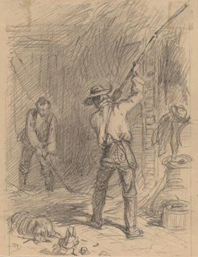
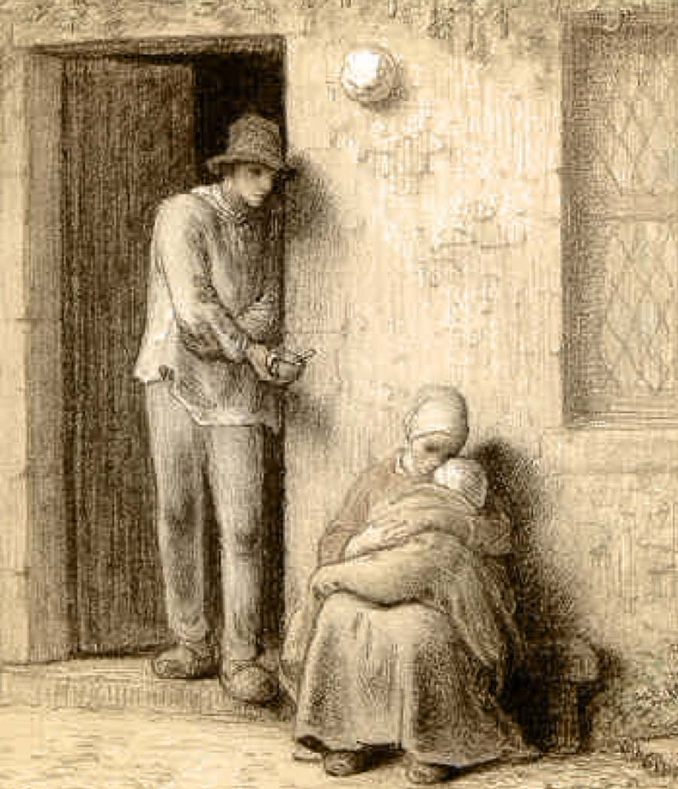

Atividades
Muito dos conselhos de rompimento é sobre o que NO fazer: não contacte o seu/sua ex, não persiga o seu/sua ex online (e definitivamente nem pessoalmente), tente não ficar obcecado/a com o seu/sua ex, etc. Mas além de manter a saúde, então o que exatamente você deve fazer??
Depois de um rompimento, todo o mundo experimenta um vazio maciço. Não é só um vazio emocional, um buraco no coração... É também literalmente um buraco na agenda: você tem uma quantidade enorme de tempo livre.
É tão tentador preencher este tempo lastimando-se e chorando e falando do seu ex e do relacionamento.
Todo o mundo vai fazer isso, mas pouco a pouco você tem que trazer a si mesma para realmente viver para VOCÊ. É a SUA vida agora, 100% sua, e você deveria focar completamente em VOCÊ.
É um clichê, mas é muito verdadeiro: ninguém jamais se importará com você mais do que você mesma.
Agora é a hora de amar a si mesma, mimar a si mesma, seguir os SEUS interesses, trabalhar em SI MESMA, tornar a SI MESMA uma pessoa melhor, e viver a SUA vida.
Então, concretamente, o que fazer? Obviamente depende de você e dos seus interesses, mas aqui tem uma porção de ideias:
Mais importante, cuide para que sua "vida real" não seja destruídaTrabalho, escola, ou o que quer que sua principal atividade de vida seja ...não a deixe despedaçar-se.
É muito, muito fácil adotar uma atitude de "não importa mesmo, nada importa", seguindo um rompimento, e depois você simplesmente deixa que as coisas importantes de sua vida se despedacem.
Combata este reflexo.
Vai ser realmente duro, mas você tem que manter-se focada no seu trabalho/escola e não deixe que a sua vida seja destruída pelo rompimento.
Fique ocupada/o com os hobbies existentes, comece novos hobbies Passar tempo com amigos é óbvio, mas depois de um período inicial de tristeza e lamentação com eles, tente fazer coisas com eles que sejam divertidas para você: esportes, viagem, compras, o que quer que lhe dê prazer.
Você pode fazer um monte de atividades sozinha também: tocar música, aprender um novo instrumento, ter aulas, praticar esportes, aprender novas habilidades, entrar para um clube, viajar, artes e artesanato.
Foque na sua religião e o lado espiritual de quaisquer maneiras que sejam certas para você.
Faça uma lista de coisas na vida que você sempre quis fazer e decida o que você pode começar a fazer agora. (Se elas são coisas que você não poderia fazer porque você estava com o seu ex, então tanto melhor... você está livre agora para viver para VOCÊ!).
Eu sei por experiência própria que é muito duro a princípio pôr energia em qualquer coisa que esteja fazendo, mas force a si mesma/o e pouco a pouco o seu foco nas atividades ficará afiado e a dor do rompimento abrandará.
Ajudar os outrosNa sequência imediata do rompimento, você não será capaz de pensar em nada além do seu ex e do relacionamento. Não importa o que você esteja fazendo, o rompimento estará sempre na sua mente.
Então poderia parecer loucura até mesmo pensar em ajudar os outros numa época como esta. Mas é uma grande maneira de ajudar a si mesma.
Faça o que quer que funcione para você. Seja voluntária local - centros de comunidade, igreja, hospital, orfanato, abrigo. Ou procure os grupos nacionais/internacionais como Cruz Vermelha, Habitat for Humanity, Médicos sem fronteiras.
Ajude os grupos de crianças. Dê uma aula. Seja mentor de jovens em risco. Melhore um parque local. Trabalhe em um abrigo de animal. Ajude os membros da sua própria família necessitados. Bancos de sangue, museus, bibliotecas, questões ambientais, olimpíadas especiais, consolo para desastre, a fundação Realizar Um Desejo... a lista é infinita.
Cuidar dos outros é muito terapêutico. Focar a sua atenção no que quer quer as pessoas precisam, faz você ver que outras pessoas estão sofrendo, e - muito frequentemente - podem realmente pôr a sua própria dor em perspectiva.
Faz você sentir-se necessária e apreciada pelos outros, o que é muito importante depois de um rompimento.
Trabalhar com outros voluntários, o que é muito útil porque as pessoas que querem ajudar os outros, são exatamente os tipos de pessoas que você quer lhe cercando quando você está deprimida.
E em muitas (todas??) situações onde você está cuidando dos outros, a sua própria dor de rompimento parecerá muito pequena no grande quadro da vida... o que é bom, porque pouco a pouco você perceberá que este realmente é o caso.
Seja altruístaÉ uma consequência natural da ideia anterior de "Ajudar Os Outros" , mas ajudar as pessoas nos foros da internet com suas questões de rompimento também ajudará você.
É realmente duro, impossível, realmente ver a sua própria situação claramente depois de um rompimento, mas eu acho que analisar as situações dos outros foi muito mas fácil, e me fez começar a perceber que a minha própria situação não era tão rara ou complexa afinal de contas.